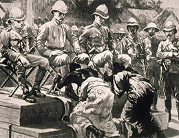
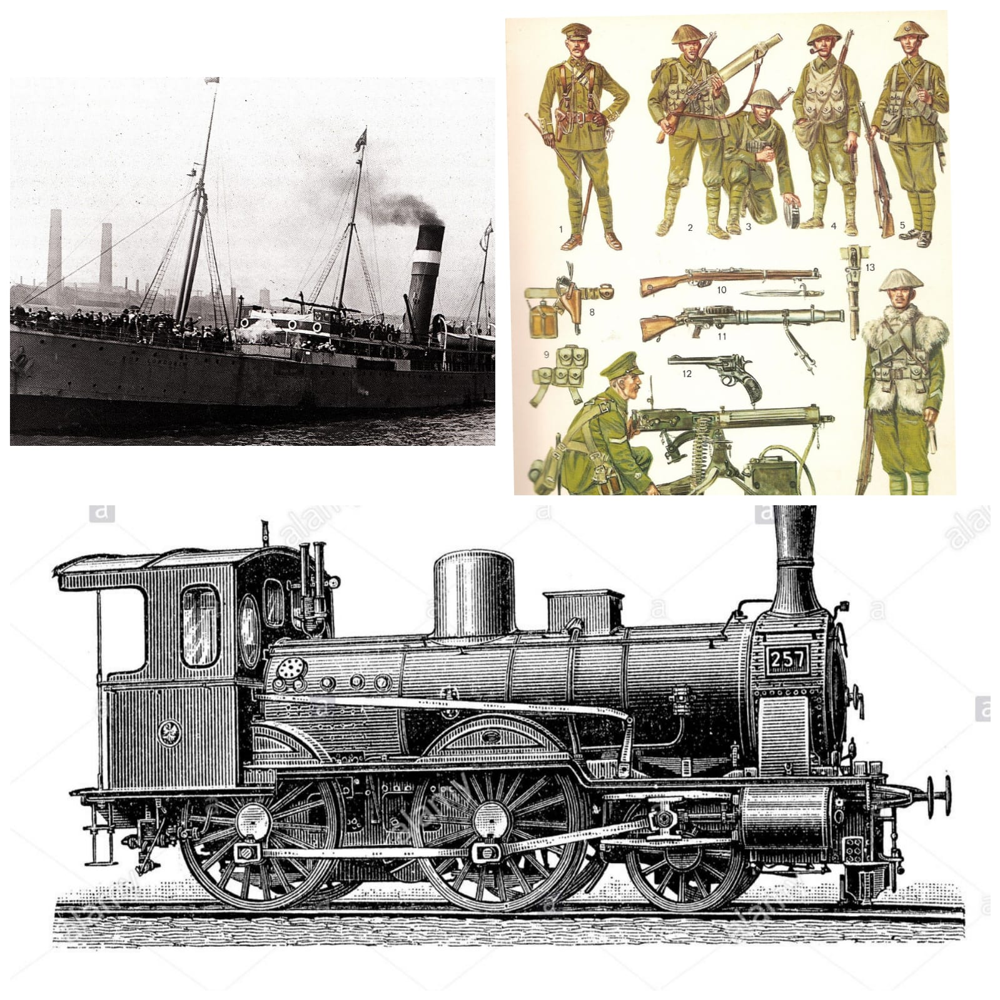

Actividad 1:
A partir de la observación de las siguientes imágenes, explica los distintos factores que impulsaron el proceso imperialista. Relaciona cada una de las imágenes con una índole de factores (económicos, tecnológicos, etc) fundamentando tu elección.
El trabajo deberá hacerse en un documento (Word, Documento de Google) aparte y enviado a la siguiente dirección de Gmail: abrahamhistoria10@gmail.com.
1)
2)
3)

4)

5)
